나라의 틀을 세우고,
전쟁과 붕당을 지나
건국과 제도 정비에서 세도정치까지, 다섯 흐름으로 이어 읽어요.
- 다섯 흐름 건국과 제도 정비 → 사화와 붕당 → 임진왜란과 호란 → 탕평과 개혁 → 세도정치. 경제·사회는 여러 왕 대에 걸친 주제별 정리예요.
- 컷마다 왕 대수·재위·연도 → 그림 → 대화 → 배경 → 전개 → 결과를 읽어요. 사이의 왕은 이름을 밝히고, 건너뛰면 ‘중간 왕 생략’으로 표시해요.
- 큰 흐름 끝마다 ‘이 부분에서 외울 것’으로 왕·사건을 이어서 정리해요.
① 건국과 제도 정비
태조가 나라를 세우고, 태종·세종·세조·성종이 차례로 왕권과 제도를 다졌다.
위화도 회군에서 새 나라로
1대 태조 이성계1392–1398 재위
1388 위화도 회군 · 1391 과전법 · 1392 조선 건국
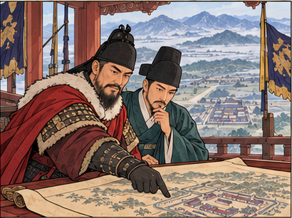
학습용 요약 대화 · 실제 발언을 그대로 옮긴 것이 아니에요.
이성계위화도에서 군대를 돌렸소. 새 나라를 세우겠소.
정도전나라를 다스릴 원칙부터 글로 세웁시다.
- 배경요동 정벌을 둘러싼 갈등 끝에 이성계가 위화도에서 군대를 돌려 권력을 잡았다.
- 전개1391 과전법으로 관리에게 줄 수조권(세금을 거둘 권리)을 새로 정했다.
- 결과이듬해인 1392년 이성계가 왕위에 올라 조선이 세워졌다.
- 함께정도전은 조선경국전으로 나라 운영의 원칙을, 불씨잡변으로 불교 비판을 내놓았다.
6조가 왕에게 바로 보고하다
3대 태종 이방원1400–1418 재위
1400 즉위 · 사간원 독립 · 6조 직계제
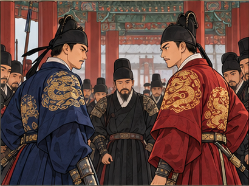
학습용 요약 대화 · 실제 발언을 그대로 옮긴 것이 아니에요.
이방원두 차례 왕자의 난 끝에 왕위에 올랐다.
신하 · 설명용 인물6조는 의정부를 거치지 않고 전하께 바로 아뢰겠습니다.
- 배경방석의 세자 책봉에 반발한 이방원이 1차 왕자의 난(1398)으로 방석과 정도전을 제거했고, 2차 왕자의 난(1400)을 거쳐 즉위했다.
- 전개고려의 낭사를 사간원으로 독립시켜 간쟁을 맡기고, 6조가 의정부를 거치지 않고 왕에게 바로 보고하는 6조 직계제를 폈다.
- 결과왕이 나랏일을 직접 챙기면서 왕권이 강해졌다.
- 함께호패법으로 16세 이상 남자에게 호패를 차게 하고, 주자소에서 금속 활자 계미자를 만들었다.
재상과 논의하고, 풍흉을 헤아리다
4대 세종1418–1450 재위
1418 즉위 · 의정부 서사제 · 연분 9등법
주제별 정리 ① · 4대 세종 재위(1418–1450)를 주제별로 나눠 봐요. 이 장면은 정치·세금·문화예요.
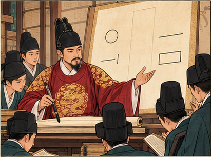
학습용 요약 대화 · 실제 발언을 그대로 옮긴 것이 아니에요.
세종흉년이 든 해에도 세금을 똑같이 받을 수는 없다.
학자 · 설명용 인물집현전에서 함께 연구하고 새 글자도 만들었습니다.
- 배경태종이 반대 세력을 정리해 두어, 세종 때는 왕권이 이미 안정되어 있었다.
- 전개6조의 보고를 의정부가 먼저 논의하는 의정부 서사제를 운영하고, 집현전에서 학자들과 학문을 연구했다(1443 훈민정음 창제).
- 세금그해 풍흉에 따라 전세를 9등급으로 나누는 연분 9등법을 시행했다(땅의 비옥도로 나눈 것은 전분 6등법).
- 책·음악농사직설·칠정산·향약집성방·삼강행실도를 펴내고 금속 활자 갑인자를 만들었다. 박연은 아악을 정리했다.
흐름 보충 · 전기의 그림
안견의 몽유도원도, 강희안의 고사관수도가 조선 전기를 대표하는 그림이다.
4군 6진과 3포
4대 세종1418–1450 재위
1419 쓰시마 정벌 · 4군 6진 · 1443 계해약조
주제별 정리 ② · 같은 세종 재위의 국경과 바다 이야기예요. 앞 장면(1443 훈민정음)보다 이른 재위 초(1419)로 시간이 다시 돌아가요.
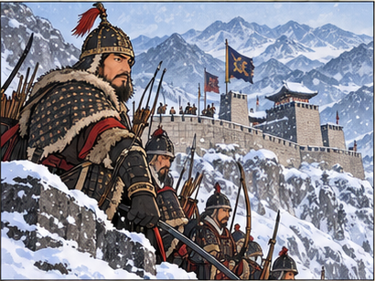
학습용 요약 대화 · 실제 발언을 그대로 옮긴 것이 아니에요.
김종서북쪽 여진을 몰아내고 6진을 쌓겠습니다.
이종무남쪽은 왜구의 근거지 쓰시마를 치겠습니다.
- 배경북쪽에서는 여진이, 남쪽 바다에서는 왜구가 국경을 어지럽혔다.
- 전개최윤덕과 김종서를 보내 4군 6진을 개척하고, 이종무를 보내 쓰시마를 정벌했다(1419).
- 결과오늘날 한반도 북쪽 국경선의 바탕이 마련되었다.
- 일본교역을 원하는 일본에 부산포·제포·염포의 3포를 열고, 계해약조(1443)로 교역 규모를 정했다.
1453년, 수양대군이 실권을 잡다
6대 단종1452–1455 재위
1453 계유정난 · 1453 이징옥의 난 → 1455 세조 즉위
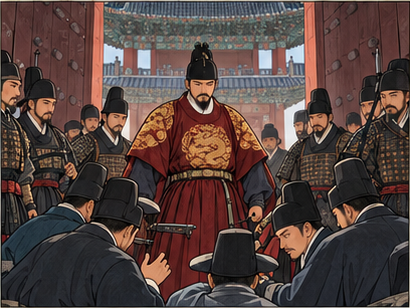
학습용 요약 대화 · 실제 발언을 그대로 옮긴 것이 아니에요.
신하 · 설명용 인물수양대군이 김종서 대감을 없애고 실권을 쥐었소.
다른 신하 · 설명용 인물함길도에서는 이징옥이 군사를 일으켰다 하오.
- 배경어린 단종을 김종서 등 대신들이 보필하고 있었다.
- 전개1453 단종의 숙부 수양대군이 김종서 등을 제거하는 계유정난을 일으켜 실권을 잡았다. 같은 해 함길도에서 이징옥의 난(단종)이 일어났다.
- 결과2년 뒤인 1455년 수양대군이 왕위에 올라 7대 세조가 되었다.
현직 관리에게만 수조권을
7대 세조1455–1468 재위
1466 직전법 · 1467 이시애의 난
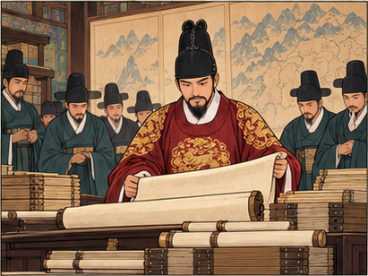
학습용 요약 대화 · 실제 발언을 그대로 옮긴 것이 아니에요.
세조물러난 관리까지 땅을 쥐고 있으니 줄 땅이 없구나.
신하 · 설명용 인물이제 현직 관리에게만 수조권을 주시지요.
- 배경퇴직한 관리에게도 수조지를 주어 사실상 대대로 이어지자, 새 관리에게 줄 땅이 모자랐다.
- 전개현직 관리에게만 수조권을 주는 직전법을 시행하고, 유가족에게 주던 수신전·휼양전을 없앴다.
- 함께왕권을 다지려 6조 직계제를 다시 폈고, 간경도감을 두어 불경을 펴냈다.
- 반란세조 때 함길도에서 이시애의 난이 일어났다.
흐름 보충 · 다음 왕 예종
세조의 아들 8대 예종 때, 이시애의 난을 진압했던 남이 장군이 역모 혐의로 처형되었다.
경국대전을 완성하다
9대 성종1469–1494 재위
1469 즉위 · 경국대전 완성 · 홍문관
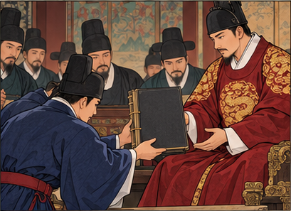
학습용 요약 대화 · 실제 발언을 그대로 옮긴 것이 아니에요.
신하 · 설명용 인물세조 때부터 엮어 온 법전을 다 완성했습니다.
성종홍문관에서 경연을 열어 학문과 나랏일을 논하리라.
- 배경세조 때부터 나라의 기본 법전을 엮어 왔다.
- 전개성종 때 경국대전을 완성하고, 홍문관(옥당)을 두어 경연에서 학문과 국정을 논했다.
- 결과조선이 법에 따라 다스리는 유교 국가의 틀을 갖추었다.
- 함께김종직 등 지방의 사림이 중앙 정치에 나서기 시작했다. 성현은 악학궤범으로 음악을 정리했다.
1급 보충 · 기관과 별칭 (조선 전 시기)
승정원(은대)은 왕명을 전하는 비서 기관, 사헌부는 관리 감찰·탄핵, 사간원은 간쟁을 맡았다. 조선의 삼사(사헌부·사간원·홍문관)는 언론 기능을 했다. 고려의 삼사는 회계를 맡은 기관이라 이름만 같다.
② 사화와 붕당
중앙에 들어온 사림이 네 번의 사화를 겪은 뒤 정권을 잡았고, 선조 때 붕당으로 나뉘었다.
사림이 화를 입다
10대 연산군1494–1506 재위
1498 무오사화 · 1504 갑자사화 → 1506 중종반정
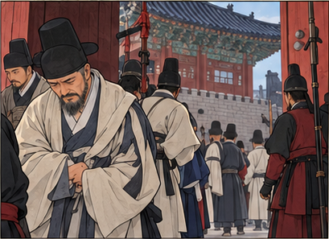
학습용 요약 대화 · 실제 발언을 그대로 옮긴 것이 아니에요.
훈구 대신 · 설명용 인물김종직의 조의제문은 세조를 비꼰 글이오.
사림 · 설명용 인물그 글을 빌미로 스승의 제자들까지 화를 입는구려.
- 배경성종 때 중앙에 들어온 사림이 기존 훈구 세력과 부딪혔다.
- 전개1498 김종직의 조의제문이 문제가 되어 무오사화가, 1504 폐비 윤씨 사건을 빌미로 갑자사화가 일어났다.
- 결과폭정이 이어지자 1506 반정으로 연산군이 쫓겨났다(중종반정).
조광조의 개혁과 기묘사화
11대 중종1506–1544 재위
1506 즉위 · 1519 기묘사화
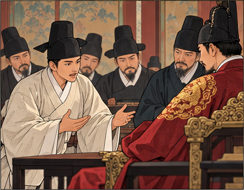
학습용 요약 대화 · 실제 발언을 그대로 옮긴 것이 아니에요.
조광조추천으로 인재를 뽑고, 공이 부풀려진 공신은 명단에서 지웁시다.
신하 · 설명용 인물공신 명단에서 빠질 사람들의 반발이 큽니다.
- 배경중종반정의 공신이 117명에 이르렀고, 공이 부풀려졌다는 비판이 컸다.
- 전개조광조가 현량과(추천으로 관리 선발)와 위훈 삭제를 주장하고, 향약 보급 등 여러 개혁을 건의했다.
- 결과반발한 공신 세력이 조광조 일파를 몰아내며 1519 기묘사화가 일어났다.
흐름 보충 · 중종 때 바다와 서원
삼포왜란(1510) 뒤 비변사를 임시 기구로 두었다. 주세붕은 백운동 서원을 세웠다.
외척 다툼, 을사사화
13대 명종1545–1567 재위
1545 을사사화 · 1555 을묘왜변
그림: 연산군 장면과 같은 사화 개념 그림(궁을 떠나는 선비들)을 다시 썼어요.
학습용 요약 대화 · 실제 발언을 그대로 옮긴 것이 아니에요.
신하 · 설명용 인물어린 왕 대신 대비께서 수렴청정을 하신다 하오.
다른 신하 · 설명용 인물외척 윤원형과 윤임이 서로 맞서고 있소.
- 배경12살 명종이 즉위하자 어머니 문정왕후가 수렴청정을 하며 외척의 힘이 커졌다.
- 전개외척 윤원형 세력과 윤임 세력이 맞서 1545 을사사화가 일어났고, 윤원형 쪽이 이겼다.
- 결과뒤이은 양재역 벽서 사건을 빌미로 윤원형이 남은 윤임 세력까지 몰아냈다.
- 바다1555 을묘왜변 뒤 비변사가 상설 기구가 되었다.
먼저 기억 · 사화 네 번 외우기
무갑기을 → 연연중명: 무오·갑자는 연산군, 기묘는 중종, 을사는 명종. 사화 순서일 뿐 왕위 계승 순서가 아니에요. 실제 계승은 중종 → 인종 → 명종.
1급 보충 · 서원과 성리학
중종 때 주세붕이 세운 백운동 서원이 명종 때 사액을 받아 소수 서원이 되었다. 이황은 성학십도, 이이는 성학집요를 지었다.
이조전랑 자리에서 갈라지다
14대 선조1567–1608 재위
1575 동인·서인으로 나뉨 · 1589 기축옥사
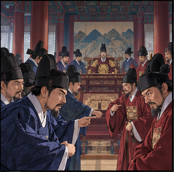
그림: 조정에서 다투는 신하들. 2부의 예송·환국 장면에도 같은 그림을 써요.
학습용 요약 대화 · 실제 발언을 그대로 옮긴 것이 아니에요.
동인 · 설명용 인물외척과 얽힌 사람에게 이조전랑을 맡길 수 없소.
서인 · 설명용 인물지난 일은 그만 따지고 사람을 봅시다.
- 배경사화를 거치며 사림이 정권을 잡았다. 이조전랑은 품계는 낮아도 관리 추천권을 쥔 자리였다.
- 전개이조전랑 자리를 두고 외척 문제에 엄격한 동인과 덜 엄격한 서인으로 나뉘었다(붕당의 시작).
- 이후1589 정여립 모반 사건(기축옥사)으로 많은 동인이 화를 입었다.
③ 임진왜란과 호란
임진왜란을 치른 뒤 광해군이 수습에 나섰고, 인조 때 두 번의 호란을 겪었다. 효종은 북벌을 준비했다.
1592년, 임진왜란
14대 선조1567–1608 재위
1592 임진왜란 · 1593 훈련도감
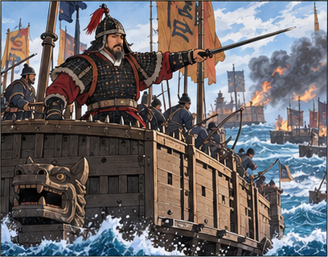
학습용 요약 대화 · 실제 발언을 그대로 옮긴 것이 아니에요.
수군 · 설명용 인물이순신 장군의 수군이 바다에서 적을 막았소!
장수 · 설명용 인물조총에 맞설 포수·사수·살수를 길러야 하오.
- 배경200년 가까운 평화가 이어지던 1592년, 일본군이 부산으로 쳐들어왔다.
- 전개선조는 의주로 피란하며 명에 도움을 청했고, 이순신의 수군과 각지 의병, 명군이 함께 맞섰다.
- 결과조총에 맞서 포수·사수·살수로 이루어진 훈련도감을 두면서 직업 군인 체제가 시작되었다.
흐름 보충 · 대표 전투
송상현 동래성 · 신립 충주 탄금대 · 김시민 진주성 · 권율 행주산성 · 정문부 북관 전투 · 명군과 평양성 탈환.
특산물 대신 쌀·포·돈으로
15대 광해군1608–1623 재위
1608 경기에서 대동법 시작 · 선혜청
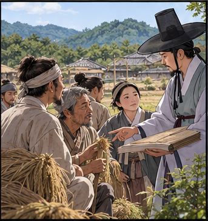
그림: 관리가 농민에게 세금 제도를 설명하는 개념 그림. 2부 영조의 균역법 장면에도 같은 그림을 써요.
학습용 요약 대화 · 실제 발언을 그대로 옮긴 것이 아니에요.
농민 · 설명용 인물특산물을 대신 바쳐 준 사람이 값을 몇 배로 받아 가요.
관리 · 설명용 인물이제 땅 넓이에 따라 쌀·포·돈으로 내게 하겠소.
- 배경특산물을 바치는 공납을 대신 내 주고 비싼 값을 받아 내는 방납의 폐단이 심했다.
- 전개이원익의 건의로 1608년 경기에서 대동법을 시작했다. 공납을 토지 결수에 따라 쌀·포·돈으로 내게 하고, 선혜청이 맡았다.
- 결과나라는 공인에게 미리 값을 주어 필요한 물품을 사 오게 했고, 공인이 활동하며 상품 거래가 늘었다.
- 그 뒤김육 등이 다른 도로 넓히자고 건의해 시행 지역이 점차 넓어졌다. 한 왕이 한꺼번에 모든 도에서 시작한 제도가 아니다.
1급 보충 · 세금 세 가지 (조선 전 시기)
전세(땅): 세종 연분 9등법 → 인조 영정법(1결당 4두로 고정) / 공납(특산물): 광해군 대동법 / 군포(군역): 영조 균역법
명과 후금 사이에서
15대 광해군1608–1623 재위
1609 기유약조 · 1619 사르후 전투
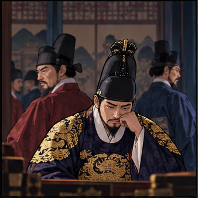
학습용 요약 대화 · 실제 발언을 그대로 옮긴 것이 아니에요.
광해군명을 돕되, 형세를 보아 후금과 원수가 되지는 마라.
강홍립전하의 뜻대로 형세를 살피겠습니다.
- 배경명은 기울고 후금이 커지는 가운데, 명이 후금을 치는 데 군사를 보내라고 했다.
- 전개광해군은 강홍립을 보내되 형세를 보아 대응하게 했다(1619 사르후 전투). 명과 후금 사이에서 중립 외교를 폈다.
- 일본·의학1609 기유약조로 일본과 교역을 다시 열었고, 허준의 동의보감이 완성되었다.
- 반발영창대군을 죽이고 인목대비를 가둔 일 등에 반발이 커졌고, 이것이 뒤에 반정의 빌미가 되었다.
1623 반정, 1627 정묘호란
16대 인조1623–1649 재위
1623 인조반정 · 1624 이괄의 난 · 1627 정묘호란
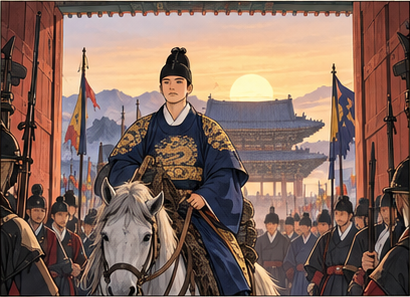
학습용 요약 대화 · 실제 발언을 그대로 옮긴 것이 아니에요.
무장 · 설명용 인물광해군을 몰아내고 새 임금을 세웠소.
병사 · 설명용 인물후금군이 쳐들어와 용골산성에서 버티고 있소.
- 배경광해군의 정치에 반발한 서인 세력이 1623년 반정을 일으켜 인조를 세웠다.
- 전개1624 반정 공신 이괄이 난을 일으켜 인조가 공주로 피란했다. 1627 후금이 쳐들어와 정묘호란이 일어나자 조정은 강화도로 피했고, 정봉수가 용골산성에서 싸웠다.
- 결과후금과 형제 관계를 맺고 정묘호란이 끝났다.
- 제도전세를 풍흉과 관계없이 1결당 4두로 고정하는 영정법을 시행했다(1635).
흐름 보충 · 인조 때 군영
임진왜란 때 둔 훈련도감에 이어 어영청·총융청·수어청을 두었다.
1636년, 남한산성
16대 인조1623–1649 재위
1636 병자호란 · 1637 삼전도 항복
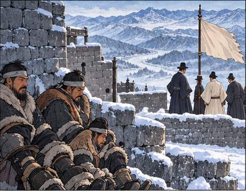
학습용 요약 대화 · 실제 발언을 그대로 옮긴 것이 아니에요.
병사 · 설명용 인물청군이 얼어붙은 압록강을 건너왔소. 남한산성으로 들어가야 하오.
장수 · 설명용 인물광교산에서는 김준룡 장군이 청군을 무찔렀소.
- 배경청이 군신 관계를 요구했고, 조선은 이를 거부했다.
- 전개청군이 빠르게 내려오자 인조는 강화도로 가지 못하고 남한산성으로 들어가 버텼다. 김준룡은 광교산에서 청군을 무찔렀다.
- 결과1637년 인조가 삼전도에서 청에 항복했다.
흐름 보충 · 산성 안의 두 목소리
김상헌은 끝까지 싸우자고(척화), 최명길은 화친하자고(주화) 했다.
북벌을 준비하고, 나선 정벌에 나서다
17대 효종1649–1659 재위
1649 즉위 · 북벌 준비 · 1654·1658 나선 정벌
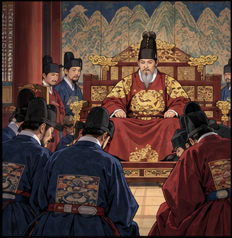
학습용 요약 대화 · 실제 발언을 그대로 옮긴 것이 아니에요.
효종청에 당한 치욕을 씻고자 북벌을 준비하라.
신하 · 설명용 인물청의 요청으로 조총 부대를 보내 러시아 세력과 싸웠습니다.
- 배경병자호란 뒤 청에 인질로 끌려갔던 봉림대군이 인조의 뒤를 이어 효종이 되었다.
- 전개어영청을 중심으로 송시열·이완 등과 함께 청을 치려는 북벌을 준비했다.
- 같은 때청의 요청으로 조총 부대를 보내 러시아 세력과 싸웠다(나선 정벌). 청을 겨냥한 북벌과 방향이 반대다.
④ 탕평과 개혁
예송과 환국으로 붕당 다툼이 거세지자, 영조와 정조가 탕평과 개혁으로 왕권을 세웠다.
예송에서 환국으로
18대 현종 → 19대 숙종1659–1720
1659·1674 예송 · 1680·1689·1694 환국
그림: 1부 선조 붕당 장면과 같은 그림(조정에서 다투는 신하들)을 다시 썼어요.
학습용 요약 대화 · 실제 발언을 그대로 옮긴 것이 아니에요.
서인 · 설명용 인물대비께서 상복을 1년만 입으시면 됩니다.
남인 · 설명용 인물왕이셨으니 3년을 입으셔야 하오.
- 배경효종과 효종비가 세상을 떠나자, 대비가 상복을 얼마 동안 입을지를 두고 서인과 남인이 맞섰다(현종 때 예송).
- 전개숙종 때는 한 붕당이 정권을 독차지했다가 한꺼번에 바뀌는 환국이 거듭되었다.
- 결과환국 때마다 진 붕당은 정권을 잃는 데 그치지 않고 목숨까지 잃었다(1689 기사환국 뒤 송시열 사사).
- 같은 때환국이 이어지던 1683년 무렵, 서인은 노론과 소론으로 나뉘었다.
- 숙종 때금위영을 두어 5군영이 갖춰졌고, 청과의 경계를 정한 백두산 정계비를 세웠다(1712).
흐름 보충 · 일본과의 교류
임진왜란 뒤 회답겸쇄환사에 이어 통신사가 일본에 갔고, 숙종 때 부산에 초량 왜관을 두었다.
군포 2필을 1필로
21대 영조1724–1776 재위
1728 이인좌의 난 · 1742 탕평비 · 1750 균역법
그림: 1부 광해군 대동법 장면과 같은 세금 개념 그림을 다시 썼어요.
학습용 요약 대화 · 실제 발언을 그대로 옮긴 것이 아니에요.
농민 · 설명용 인물군대 대신 내는 군포 2필이 너무 무겁습니다.
영조1필로 줄이고, 모자란 몫은 다른 데서 채우라.
- 배경군역 대신 내는 군포 2필이 백성에게 큰 부담이었다.
- 전개1750 균역법으로 군포를 1필로 줄였다.
- 결과줄어든 몫은 결작(토지 1결당 쌀 2두), 선무군관포, 어장세·선박세로 메웠다.
- 정치이인좌의 난(1728)을 진압하고, 붕당 다툼을 누그러뜨리려 탕평책을 펴 성균관에 탕평비를 세웠다.
- 책속대전과 동국문헌비고를 펴내고, 청계천을 준설했다.
1급 보충 · 세금 세 가지 (조선 전 시기)
전세(땅): 세종 연분 9등법 → 인조 영정법(1결당 4두로 고정) / 공납(특산물): 광해군 대동법 / 군포(군역): 영조 균역법
규장각에서 인재를 기르다
22대 정조1776–1800 재위
1776 규장각 · 1791 신해통공 · 1791 신해박해
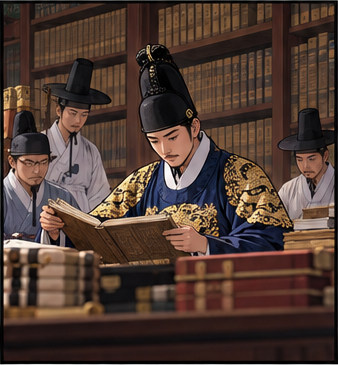
학습용 요약 대화 · 실제 발언을 그대로 옮긴 것이 아니에요.
정조규장각에서 인재를 기르고, 젊은 문신은 내가 다시 가르치겠다.
검서관 · 설명용 인물서얼 출신인 저희도 검서관으로 일합니다.
- 배경붕당 다툼이 이어지자, 정조는 뜻을 함께할 인재를 직접 기르려 했다.
- 전개규장각을 세워 박제가 같은 서얼 출신까지 검서관으로 쓰고, 젊은 문신을 다시 가르치는 초계문신제를 시행했다.
- 경제1791 신해통공: 육의전을 뺀 시전의 금난전권 폐지. 난전이 늘어나는 시장의 변화를 받아들였다.
- 천주교천주교 신앙에 따라 어머니 제사를 지내지 않은 윤지충이 처형되었다(1791 신해박해).
친위 부대와 새 성
22대 정조1776–1800 재위
1793 장용영 · 1796 수원 화성 완공
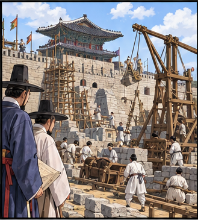
학습용 요약 대화 · 실제 발언을 그대로 옮긴 것이 아니에요.
감독 · 설명용 인물왕을 지키는 장용영이 이 성을 지키게 된다.
일꾼 · 설명용 인물기계로 무거운 돌을 들어 올립니다.
- 배경정조는 왕을 직접 호위할 군사가 필요했다.
- 전개왕의 친위 부대 장용영을 두고, 수원 화성을 쌓았다(1796 완공).
- 책대전통편으로 속대전을 보완하고, 무예도보통지를 펴냈다.
선택 심화 · 그중 먼저
정약용이 설계한 거중기가 수원 화성 공사에 쓰였다.
⑤ 세도정치
어린 순조가 즉위하자 외척 가문이 권력을 쥐었고, 수취가 어지러워지며 농민이 일어섰다.
몇몇 가문이 권력을 쥐다
23대 순조1800–1834 재위
1801 신유박해 · 황사영 백서 사건
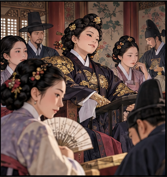
학습용 요약 대화 · 실제 발언을 그대로 옮긴 것이 아니에요.
관리 · 설명용 인물왕이 어리니 외척 가문이 나랏일을 쥐고 흔드는구려.
다른 관리 · 설명용 인물천주교 신자들에 대한 박해도 크게 일어났소.
- 배경정조가 세상을 떠나고 11살 순조가 즉위했다.
- 전개왕실과 혼인한 외척 가문이 권력을 쥐는 세도정치가 시작되어, 순조·헌종·철종 3대에 이어졌다.
- 1801신유박해로 천주교 신자가 크게 탄압받았다. 정약종은 처형, 정약용·정약전은 유배되었다.
- 편지황사영이 박해 상황을 북경 주교에게 알리려던 백서가 발각되었다(황사영 백서 사건).
평안도에서, 진주에서
23대 순조 → 25대 철종1811 · 1862
1811 홍경래의 난 · 1862 임술농민봉기 · 삼정이정청
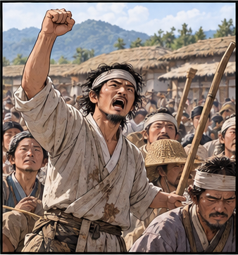
학습용 요약 대화 · 실제 발언을 그대로 옮긴 것이 아니에요.
농민 · 설명용 인물세금을 거두는 일이 이렇게 어지러워서야 살 수가 없소!
관리 · 설명용 인물박규수를 보내 사정을 조사하게 합시다.
- 배경세도정치 아래 삼정(전정·군정·환곡)이 문란해졌고, 평안도 사람들은 지역 차별에 불만이 컸다.
- 전개1811 순조 때 홍경래가 평안도에서 봉기했다. 24대 헌종을 지나 1862 철종 때는 유계춘을 중심으로 진주에서 임술농민봉기가 일어났다.
- 결과조정은 박규수를 안핵사로 보내 조사하게 하고, 삼정이정청을 두어 수취 제도를 고치려 했다.
모내기로 늘어난 수확
여러 왕 대에 걸친 변화 · 모내기법 · 상품 작물 · 광산
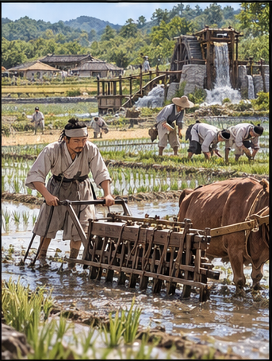
학습용 요약 대화 · 실제 발언을 그대로 옮긴 것이 아니에요.
농민 · 설명용 인물모내기를 하니 벼 뒤에 보리도 거둡니다.
이웃 · 설명용 인물고추와 담배는 팔려고 기르지요.
- 농법모내기법이 널리 퍼져 일손이 줄고, 벼·보리 이모작이 늘었다.
- 작물감자·고구마 같은 구황 작물(흉년 대비)이 들어오고, 고추·담배·인삼 같은 상품 작물(팔기 위한 작물)을 길렀다.
- 광산민간 광산 개발이 늘어 덕대가 광산을 경영하고, 나라는 설점수세제로 세금을 받았다.
장터의 새 주인들
여러 왕 대에 걸친 변화 · 공인 · 사상 · 상평통보
학습용 요약 대화 · 실제 발언을 그대로 옮긴 것이 아니에요.
상인 · 설명용 인물개성의 송상이 전국에 지점을 냈다오.
손님 · 설명용 인물값은 상평통보로 치르지요.
- 상인관청 물품을 대는 공인, 개성의 송상·의주의 만상 같은 사상, 장시를 도는 보부상이 활동했다.
- 독점큰 자본으로 물건을 사 모아 값을 좌우하는 도고가 나타났다.
- 화폐숙종 때 만든 상평통보가 널리 쓰였다.
흔들리는 신분, 새로운 목소리
여러 왕 대에 걸친 변화 · 서얼 · 중인 · 서민 문화 · 동학
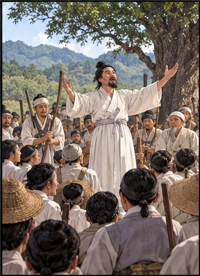
학습용 요약 대화 · 실제 발언을 그대로 옮긴 것이 아니에요.
마을 사람 · 설명용 인물최제우가 연 동학이 마을마다 퍼지고 있소.
이웃 · 설명용 인물서얼은 청요직을, 중인은 시사를 꾸리며 목소리를 내지요.
- 서얼서얼은 청요직에 나아가게 해 달라는 통청 운동을 벌였고, 정조 때 규장각 검서관에 기용되기도 했다.
- 중인중인은 시사를 조직해 문학 활동을 했다.
- 서민한글소설·판소리·탈춤이 퍼지고, 공명첩·납속으로 신분을 사는 일도 늘었다. 신분제가 이때 사라진 것은 아니다.
- 동학최제우가 창시한 동학은 서학(천주교)에 맞선다는 뜻을 담았다.
흐름 보충 · 후기의 그림
정선은 실제 산천을 그린 진경산수화(인왕제색도·금강전도)를, 김정희는 세한도와 추사체를 남겼다.
땅을 나눌까, 청에서 배울까
여러 왕 대에 걸친 학문 · 중농 실학 · 북학
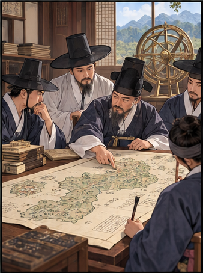
학습용 요약 대화 · 실제 발언을 그대로 옮긴 것이 아니에요.
학자 · 설명용 인물농민에게 땅을 어떻게 나눌지가 먼저요.
다른 학자 · 설명용 인물청의 수레와 배부터 배워야 하오.
- 토지유형원 균전론(신분에 따라 나눔) · 이익 한전론(최소한의 땅은 팔지 못하게) · 정약용 여전론(마을이 함께 짓고 나눔)
- 북학홍대용(지전설) · 박지원(정조 때 청에 다녀와 열하일기) · 박제가(북학의, 규장각 검서관)
선택 심화 · 그중 먼저
신숙주의 해동제국기는 조선 전기의 일본 견문 기록, 유득공의 발해고는 남북국이라는 말을 썼다. 연려실기술의 저자는 이긍익으로, 이익과 다른 인물이다.
1대 태조 1392 건국 → 3대 태종 6조 직계제 → 4대 세종 의정부 서사제·연분 9등법 → 1453 계유정난(6대 단종 때) → 1455 7대 세조 즉위·직전법 → 9대 성종 경국대전 → 사화: 1498·1504 연산군 · 1519 중종 · 1545 명종 → 14대 선조 붕당·1592 임진왜란 → 15대 광해군 1608 대동법(경기) → 16대 인조 1623 반정·1627 정묘호란·1636 병자호란
17대 효종 북벌·나선 정벌 → 18대 현종 예송 → 19대 숙종 환국 → (20대 경종) → 21대 영조 탕평·1750 균역법 → 22대 정조 규장각·1791 신해통공 → 23대 순조 세도정치·1801 신유박해·1811 홍경래의 난 → (24대 헌종) → 25대 철종 1862 임술농민봉기·삼정이정청
17~19세기 사회: 모내기법·상품 작물 · 공인·송상·상평통보 · 서얼·중인·서민 문화 · 동학
다 읽었다면 퀴즈로 확인하기 →